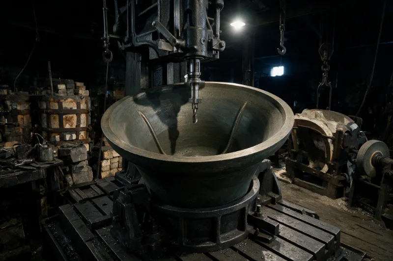
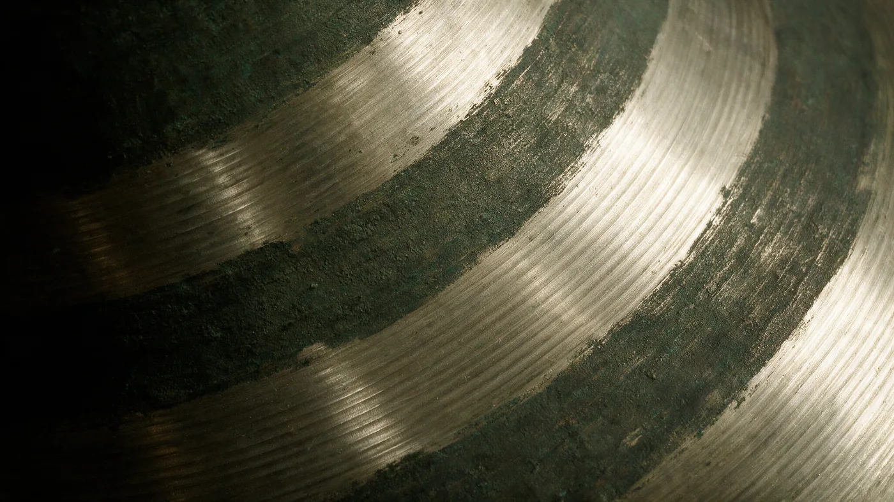

What re-tuning actually moves
A bell has five partials that matter. Tuning cuts metal from the inside at the heights where each one sounds — the hum near the lip, the nominal near the shoulder. Cut in the wrong place and you have moved two partials to fix one.

| Partial | Cents | Metal off |
|---|
What we will not do
Re-tune a bell that is cracked
A crack in the soundbow moves as the bell is cut. We will weld it or we will re-cast it, and we will say which before you commit to either.
Work without a faculty
Bells in a church are under faculty jurisdiction. We can advise your architect and we can wait, but we will not lift a bell out of a frame on a verbal from a churchwarden.
Quote from a photograph
Weights and notes are on record. Everything else — the frame, the fittings, the state of the headstocks — needs somebody in the tower.
Nine kilograms came off a bell that weighs seven hundred and thirty-eight
That is the whole of it. The bright bands are the cut. Everything darker is the patina the bell arrived with, and it will close over the new metal in a few winters.

Tell us about the ring
We answer every enquiry ourselves, usually within a week. If the tower is in the middle of a faculty application, say so — it changes what we can usefully do first.
Enquiry sent
We have it. You will hear from one of us, not from an office.